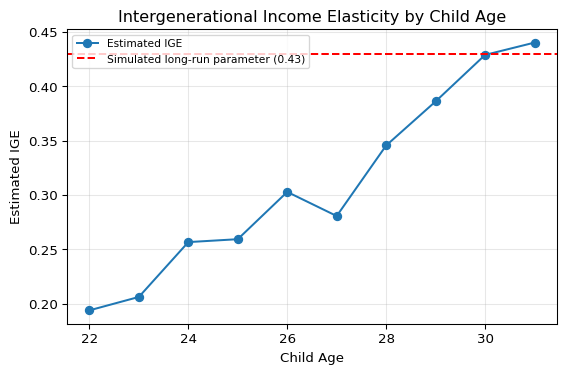

Matching Parents and Children with SQL in Python
Tutorial data: This post uses simulated longitudinal family data, not PSID or observed U.S. income data. All conclusions concern the simulated example.
1. Introduction: Why study intergenerational mobility?
How closely tied are the future earnings of a child to the earnings of its parents? Understanding intergenerational economic mobility depends on this topic.
Economists frequently assess this link using the intergenerational income elasticity (IGE). The larger the IGE, the stronger the relationship between parent and child income and thus the smaller the intergenerational mobility.
In this lesson, we’ll be matching parents and children in a simulated longitudinal dataset using Python and SQL. We will next estimate IGE using single year and multi-year average income. Finally, we will go over the implications of income measurement and life-cycle bias on our estimates.
At the end of this session you will know how to use SQL to join family information, build income measures, and analyse estimates of intergenerational income mobility.
2. Understanding the Data
Before matching parents and children, we need to understand how the data are organized.
For this tutorial, we use a simulated longitudinal dataset containing 1,200 families, with one parent and one child in each family. Each individual has income observations from 2010 to 2019, giving us 2,400 individuals and 24,000 person-year records.
The dataset is organized into two tables:
- individuals.csv: Contains individual identifiers (
person_id), family identifiers (family_id), and each person’s role (parentorchild). - earnings.csv: Contains annual income observations for each individual, identified by
person_idandyear.
The person_id uniquely identifies each individual, while the family_id connects parents and children who belong to the same family. Since income observations are stored separately, we need SQL to combine the relevant information.
For example, we can use the following Python code to load the datasets:
import pandas as pd
individuals = pd.read_csv("data/individuals.csv")
earnings = pd.read_csv("data/earnings.csv")
print(individuals.head())
print(earnings.head())The first table describes who each person is and which family they belong to, while the second describes how their income changes over time.
This separation is common in longitudinal datasets and makes SQL particularly useful for combining information across individuals and years.
3. Matching Parents and Children Using SQL
Now that we understand the data structure, we can use SQL to connect parents and children.
Python provides a built-in library called sqlite3, which allows us to execute SQL queries directly within Python.
Step 1: Create a SQLite Database
First, we load our datasets into an in-memory SQLite database.
import sqlite3
conn = sqlite3.connect(":memory:")
individuals.to_sql("individuals", conn, index=False, if_exists="replace")
earnings.to_sql("earnings", conn, index=False, if_exists="replace")The :memory: option creates a temporary database. The to_sql() function converts our pandas DataFrames into SQL tables.
Step 2: Explore the Data with SELECT
The SELECT statement allows us to choose specific columns from a table.
query = """
SELECT person_id, family_id, role
FROM individuals
LIMIT 6;
"""
print(pd.read_sql_query(query, conn))Here, SELECT specifies the columns we want, FROM identifies the table, and LIMIT restricts the output to six rows.
Step 3: Match Parents and Children Using JOIN
Next, we connect parents and children using their shared family_id.
query = """
SELECT
p.person_id AS parent_id,
c.person_id AS child_id,
p.family_id
FROM individuals AS p
JOIN individuals AS c
ON c.parent_id = p.person_id
AND c.family_id = p.family_id
WHERE p.role = 'parent'
AND c.role = 'child';
"""
matched = pd.read_sql_query(query, conn)
print(matched.head())
print("Matched parent-child pairs:", len(matched))This is a self-join, meaning that we join a table with itself.
We use p to represent parents and c to represent children. The JOIN operation connects each child’s parent_id to the corresponding parent’s person_id, while family_id verifies that both individuals belong to the same family. The WHERE clause ensures that each match contains one parent and one child.
In our simulated dataset, this produces 1,200 matched parent–child pairs.
Step 4: Calculate Average Income Using GROUP BY
After identifying family relationships, we can summarize annual income for each individual.
query = """
SELECT
person_id,
AVG(income) AS average_income,
COUNT(*) AS years_observed
FROM earnings
GROUP BY person_id;
"""
average_income = pd.read_sql_query(query, conn)
print(average_income.head())The GROUP BY statement combines observations belonging to the same person.
The aggregation functions AVG() and COUNT() calculate each person’s average annual income and number of observed years, respectively.
These SQL processes, in sum, allow us to convert distinct person and income data into information useful for the analysis of intergenerational mobility.
4. Constructing Income Measures
To estimate the IGE, we need income measures for both parents and children. We compare income from 2010 with average income from 2010–2019.
The following SQL query combines our matched pairs with annual earnings and calculates both measures.
query = """
SELECT
m.parent_id,
m.child_id,
AVG(CASE WHEN p.year = 2010 THEN p.income END)
AS parent_single,
AVG(CASE WHEN c.year = 2010 THEN c.income END)
AS child_single,
AVG(CASE
WHEN p.year BETWEEN 2010 AND 2019
THEN p.income
END) AS parent_average,
AVG(CASE
WHEN c.year BETWEEN 2010 AND 2019
THEN c.income
END) AS child_average
FROM matched AS m
JOIN earnings AS p
ON m.parent_id = p.person_id
JOIN earnings AS c
ON m.child_id = c.person_id
AND p.year = c.year
GROUP BY m.parent_id, m.child_id;
"""
matched.to_sql("matched", conn, index=False, if_exists="replace")
income_data = pd.read_sql_query(query, conn)
print(income_data.head())CASE WHEN selects income from 2010, while AVG() calculates average income over the specified 2010–2019 period. Matching the years prevents duplicate combinations of annual observations.
Single-year income may contain temporary fluctuations, such as bonuses or unemployment. Averaging several years reduces the influence of these fluctuations and may better approximate long-run economic status.
5. Estimating the Intergenerational Income Elasticity
We estimate the IGE using a log-log regression:
\[ \ln(Y_{\text{child}}) = \alpha + \beta \ln(Y_{\text{parent}}) + \varepsilon \]
Here, \(\beta\) measures the association between parental and child income. A higher IGE indicates stronger income persistence across generations.
import numpy as np
import statsmodels.api as sm
def estimate_ige(data, parent_col, child_col):
df = data[[parent_col, child_col]].dropna()
df = df[(df[parent_col] > 0) & (df[child_col] > 0)]
X = sm.add_constant(np.log(df[parent_col]))
y = np.log(df[child_col])
model = sm.OLS(y, X).fit()
return model.params.iloc[1]
ige_single = estimate_ige(
income_data, "parent_single", "child_single"
)
ige_average = estimate_ige(
income_data, "parent_average", "child_average"
)
print(f"Single-year IGE: {ige_single:.5f}")
print(f"Ten-year average IGE: {ige_average:.5f}")Our simulated results are:
| Income measure | Estimated IGE |
|---|---|
| Single-year income (2010) | 0.194 |
| Ten-year average income (2010–2019) | 0.385 |
The larger estimate from the averaged income shows that transient income changes could attenuate the observed intergenerational association when just one year is studied. These conclusions are based on simulated data, not actual income mobility in the US.
6. Understanding Life-Cycle Bias
Life-cycle bias arises when income at a certain age is not a good proxy for the long-run economic position of the individual.
For example, younger workers may have lower wages while they are in school or acquiring experience, whereas older workers may have more steady incomes.
We can see this by calculating the IGE at different ages of the children.
The calculated IGE of the 22-year-old is about 0.194 in magnitude, substantially below than the stimulated long-run value of 0.43. It normally increased with the age of children, reaching around 0.44 at age 31.
This trend suggests the possibility of life-cycle bias, i.e., income observed early in a worker’s career may be unrepresentative of long-run earning capabilities. Averaging income across several years smoothes out transitory changes, and the estimate for the IGE is 0.385, closer to the estimated long-run value. However, averaging does not automatically eliminate life-cycle bias.
7. Conclusion
In this lesson we used Python and SQL to match 1,200 parent-child pairings and estimate inter-generational income elasticity.
Our simulated results indicate that the IGE rises from 0.194 with single-year income to 0.385 with ten-year average income. This disparity underscores the significance of income assessment on intergenerational mobility results.
The essential lesson is the need of precise matching of people as well as exact measurement of income. SQL gives a consistent technique to build family bonds and multi-year income metrics assist to iron out short-term variations. Researchers should also be mindful of life-cycle impacts when assessing intergenerational income estimates.
8. Reproducing This Tutorial
All data and results in this tutorial can be reproduced using the Python scripts in the accompanying GitHub repository.
First, install the required Python packages:
pip install -r requirements.txtNext, generate the simulated longitudinal dataset:
python scripts/generate_data.pyFinally, run the SQL matching and IGE analysis:
python scripts/analyze.pyThe first script generates the individual and annual income records. The second matches parents and children using SQL, estimates the IGE, and saves the resulting tables and visualizations.
Because the data are simulated, the findings should be interpreted as a demonstration of the methodology rather than evidence about actual intergenerational mobility in the United States.
See the GitHub project README for commands to generate all data, results and figures from code.